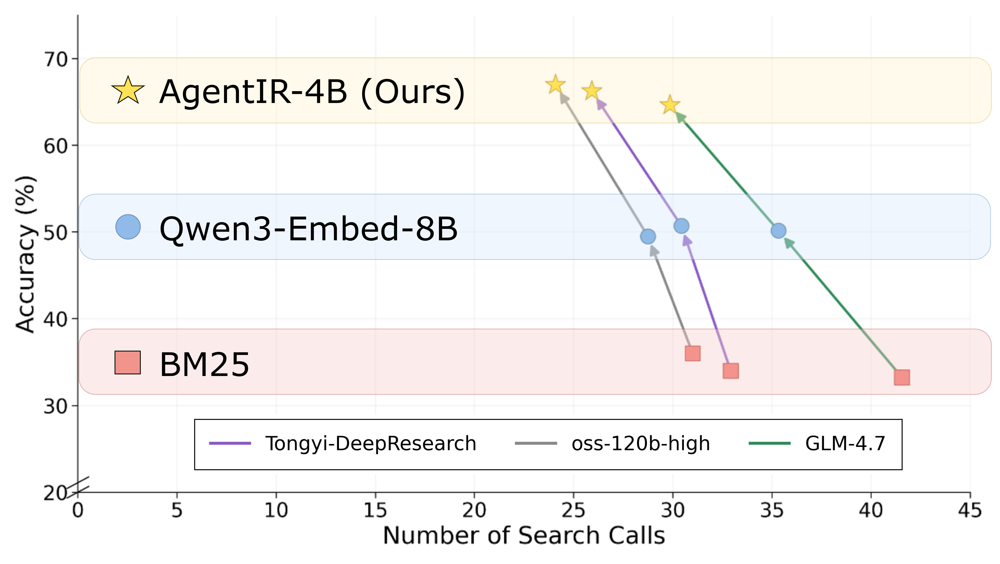
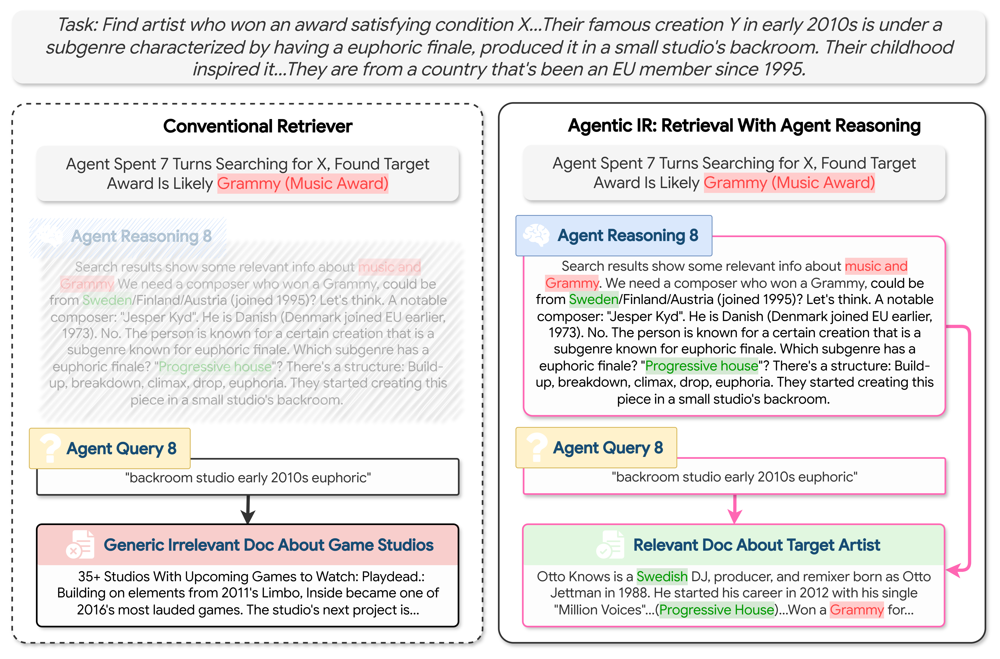
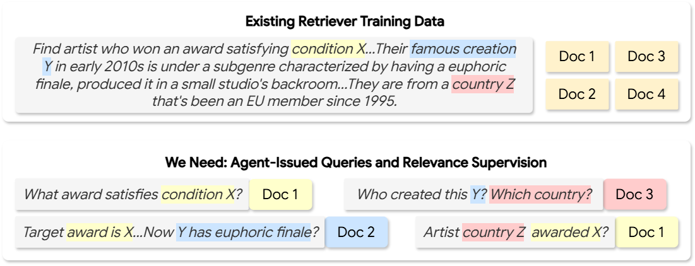
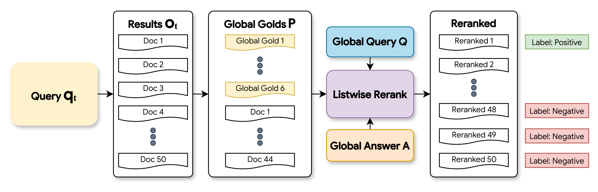

| LLM | Retriever | Accuracy | Recall | Search Calls |
|---|
End-to-end agent accuracy on BrowseComp-Plus across LLMs and retrievers
Deep Research agents are rapidly emerging as primary consumers of modern retrieval systems. Unlike human users who issue and refine queries without documenting their intermediate thought processes, Deep Research agents generate explicit natural language reasoning before each search call, revealing rich intent and contextual information that existing retrievers entirely ignore. To exploit this overlooked signal, we introduce: (1) Reasoning-Aware Retrieval, a retrieval paradigm that jointly embeds the agent's reasoning trace alongside its query; and (2) DR-Synth, a data synthesis method that generates Deep Research retriever training data from standard QA datasets. We demonstrate that both components are independently effective, and their combination yields a trained embedding model, AgentIR-4B, with substantial gains. On the challenging BrowseComp-Plus benchmark, AgentIR-4B achieves 68% accuracy with the open-weight agent Tongyi-DeepResearch, compared to 50% with conventional embedding models twice its size, and 37% with BM25.

End-to-end Deep Research accuracy on BrowseComp-Plus for three agents paired with three retrievers. AgentIR-4B substantially outperforms conventional retrievers, in both effectiveness (improved accuracy) and efficiency (decreased search calls).
Existing approaches treat a Deep Research agent's query identially to a standalone human search, where the retriever operates on the query alone and ignores the agent's explicit reasoning traces. To this end, we propose Reasoning-Aware Retrieval, a retrieval paradigm that jointly embeds the reasoning trace alongside the query, learning a retriever that leverages the rich intent and contextual information expressed in agent reasoning.

Conventional Retrieval (Qwen3-Embedding-4B) vs. Reasoning-Aware Retrieval (AgentIR-4B) for a task from BrowseComp-Plus.
Reasoning trace enhances retrieval in three ways:
Importantly, unlike task-aware retrieval that requires explicit human instructions, or past query-expansion methods that necessitate an additional costly LLM call purely for query expansion, the Deep Research agent generates its reasoning trace entirely "for free".
The task of reasoning-aware retrieval is far from the pre-training of existing retrievers. Thus, to execute reasoning-aware retrieval effectively, we train the retriever to use reasoning-query pairs through contrastive learning.
However, this poses a new challenge: existing datasets do not contain training data for the agent sub-queries that arise during Deep Research. Traditional training datasets provide instances of global questions Q's and their corresponding relevance judgements. However, in Deep Research, the agent observes the global Q and iteratively issues sub-queries; the retriever's task is to handle these sub-queries, not the global Q.

To bridge this gap, we introduce DR-Synth, a pipeline that synthesizes sub-query level training data from traditional QA datasets.
We run a Deep Research agent on each question Q. As the agent searches, it produces a sequence of reasoning traces and search queries. Each search step therefore yields a training example consisting of the reasoning trace and the issued query.
For every sub-query during the rollout, we gather candidate documents using a standard retriever, followed by an oracle reranking procedure. The top-reranked document becomes positive supervision, and the bottom ranked become hard negatives.

Visualization of the oracle reranking procedure used to generate sub-query level supervision.
Training a reasoning-aware retriever on DR-Synth generated data yields AgentIR-4B.
We evaluate retrievers in end-to-end Deep Research on BrowseComp-Plus, paired with three open-weight agents: Tongyi-DeepResearch (Tongyi-DR), gpt-oss-120B, and GLM-4.7.
AgentIR-4B substantially outperforms all prior baselines. With Tongyi-DR, it achieves 66.27% accuracy, a 17.60% absolute improvement over the Qwen3-Embed-4B backbone. For perspective, this gain is comparable to the improvement from BM25 to Qwen3-Embed-4B (14.69%). AgentIR-4B also outperforms Qwen3-Embed-8B, a model twice its size, by about 15% absolute accuracy, and surpasses prior reasoning-intensive retrievers such as ReasonIR-8B, as well as query expansion approaches like Reason-Rewriter + Reason-Embed-8B.
Beyond accuracy, AgentIR-4B achieves notable efficiency gains: the number of search calls decreases from 32.92 with BM25 to 25.91. Moreover, AgentIR-4B outperforms Qwen3-Embed-4B + LLM Rerank, a highly computationally expensive reranking method by approximately 10% absolute accuracy, despite performing no reranking.
Importantly, AgentIR-4B’s improvements on BrowseComp-Plus are zero-shot, and the gains generalize consistently across all three agents.
| LLM | Retriever | Accuracy | Recall | Search Calls |
|---|
End-to-end agent accuracy on BrowseComp-Plus across LLMs and retrievers
Additional details and ablations can be found in the paper.
If you find this work useful, please cite:
@article{chen2026AgentIR,
title={AgentIR: Reasoning-Aware Retrieval for Deep Research Agents},
author={Zijian Chen and Xueguang Ma and Shengyao Zhuang and Jimmy Lin and Akari Asai and Victor Zhong},
year={2026},
journal={arXiv preprint arXiv:2603.04384}
}